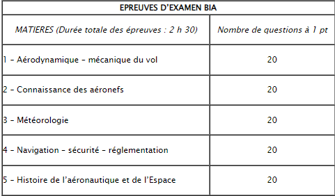

Le programme contient aussi un examen, celui-ci est national. Les sujets d’examen des matières obligatoires sont communs à toutes les académies tandis que les épreuves facultatives peuvent être définies par le Délégué CIRAS de chaque académie. Le déroulement des épreuves s’effectue à la date déterminée par le ministère.
